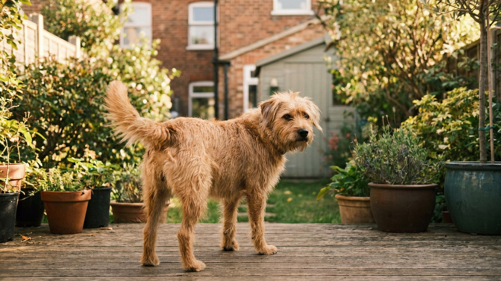

«Виляет хвостом — значит, рад» — самое распространённое и самое опасное упрощение о собачьем языке тела. По данным ветеринарного этолога Стэнли Корена (University of British Columbia), 77% укусов детей происходит именно в момент, когда собака «виляла хвостом». Хвост — это не индикатор радости, это индикатор возбуждения. И то, что именно означает это возбуждение, зависит от позиции, скорости и направления движения. Восемь положений, которые надо знать.
Хвост собаки — сложный коммуникационный инструмент. Правильная интерпретация требует трёх параметров:
Нейтральное положение у каждой породы разное: бигль держит хвост вверх естественно, борзая — горизонтально, немецкая овчарка — опущенным. Нельзя сравнивать бигля с борзой по абсолютной высоте хвоста — только по отклонению от нормы для породы.
Сигнал: уверенность, доминирование, внимание. Собака оценивает ситуацию с позиции уверенности в себе. В контексте встречи с незнакомой собакой или человеком — предупреждение: «я здесь главный». Не агрессия, но потенциал для конфликта высок если встречная собака ответит таким же сигналом.
При медленном виляньи с высокой позицией — настороженность и потенциальная угроза. Это не «рад встрече», это «я тебя изучаю».
Сигнал: сильное положительное возбуждение. Классическая картина встречи с хозяином после долгого отсутствия. Высокая позиция + быстрое виляние = «мне очень хорошо прямо сейчас».
Дополнительный признак подлинной радости — виляние всем задом, а не только хвостом. Если виляет только хвост при напряжённом корпусе — возбуждение может быть смешанным.
Сигнал: внимание, настороженность, исследование. «Я что-то замечаю и анализирую». Нейтральная рабочая позиция у охотничьих собак на следе. В обычной жизни — собака что-то услышала или учуяла и остановилась. Не тревога, но повышенная готовность.
Сигнал: дружелюбие, приглашение к контакту, нейтральная открытость. Самый безопасный сигнал для подхода к незнакомой собаке. Часто сопровождается расслабленным корпусом, мягкими глазами.
Это тот хвост, который ищешь перед тем, как погладить незнакомую собаку. Если хвост именно в этой позиции — риск минимален.
Сигнал: расслабленность, покорность, «всё в порядке». Здоровая физиологическая релаксация. Собака спокойна, не заинтересована в конфликте. Часто видим у собаки, которая просто прогуливается и нюхает.
Важно не путать с хвостом низко без движения — это уже другой сигнал.
Сигнал: страх, сильный стресс, подчинение. Самый очевидный дистресс-сигнал. Собака напугана или испытывает боль. При длительном хвосте «поджатом» — хроническая тревога или боль в крестцово-подвздошной области.
Важно: если незнакомая собака подходит к вам с поджатым хвостом — она не «добренькая и безопасная», она боится. Испуганная собака кусает. Не нависайте над ней, не тянитесь гладить по голове — лучше отвернитесь, присядьте, дайте ей подойти самой.
Сигнал: максимальная уверенность или агрессивная готовность. Особенно при жёстком корпусе, поднятой шерсти (пилоэрекция) на загривке, прямом взгляде. Это красная зона. Хвост «флаг» у нападающей собаки — классика. Немедленно уйдите из конфронтации.
Исключение: у некоторых пород (акита, чау-чау, сибирский хаски) хвост стандартно загнут вверх — у них читать нужно только изменения, а не базовую позицию.
Открытие 2011 года, перевернувшее понимание. Исследование Vallortigara, Siniscalchi & Quaranta (Current Biology) показало: собаки виляют хвостом вправо при положительных эмоциях (хозяин, дружелюбная собака) и влево — при отрицательных (незнакомец, угрожающая собака).
Это связано с латерализацией мозга: левое полушарие (положительные эмоции, приближение) управляет правой стороной тела, правое (отрицательные, избегание) — левой.
Практически: если хвост активно виляет с уклоном влево — это не радость, даже если виляние быстрое. Это смешанные или негативные эмоции. Эффект особенно заметен при встречах с незнакомыми людьми.
Хвост — один канал из многих. Для правильной интерпретации смотрим всегда на:
Если хвост виляет быстро, но уши прижаты, корпус напряжён и глаза напряжены — это не радость. Это конфликт мотиваций, и такая собака непредсказуема.
Купированный хвост (обрезанный) лишает собаку 30% коммуникативных сигналов. Исследования (Leaver & Reimchen, 2008) показали: собаки с купированными хвостами получают значительно больше агрессивных реакций от сородичей, потому что другие собаки не могут правильно прочитать их намерения. Это одна из причин, по которой купирование запрещено в 36 странах Европы.
Породы с короткими «природными» хвостами (бобтейл, австралийская овчарка, манкс) используют более активную мимику морды и ушей как компенсацию.